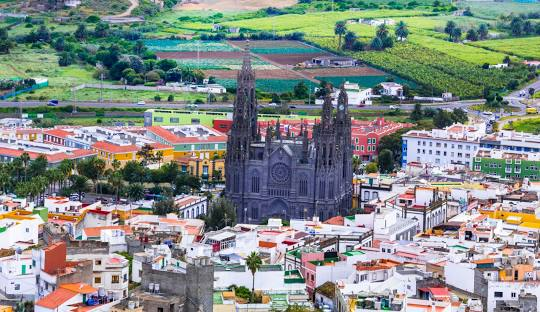

Arucas: Tradición y Encanto
Atracciones Principales
- Iglesia de San Juan Bautista
- Destilería Arehucas
- Jardín de la Marquesa de Arucas
- Parque Municipal de Arucas
Gastronomía
- Queso de flor de Guía
- Rosquetes de Arucas
- Puchero canario
Transporte
Arucas cuenta con servicio de guagua que conecta con otros municipios de la isla de Gran Canaria. Para más información sobre horarios y rutas, puedes visitar Global.
